Para quién: el contador o auxiliar que prepara la información exógena de una o varias empresas a partir de los balances de Siigo, Alegra o Dataico.
Qué va a lograr: abrir el aplicativo por primera vez y, siguiendo los pasos en orden, terminar con los formatos 1001, 1003, 1005, 1006, 1007, 1008, 1009, 1010, 1011, 1012 y 2276 listos para cargar en el prevalidador.
Cuánto toma: la primera empresa, entre 1 y 3 horas (la mayor parte es revisar cuentas en el Asistente). Las siguientes, bastante menos, porque la parametrización se copia.
Siga los pasos en este orden. Los pasos en azul claro se hacen una sola vez (o una vez al año); el resto, por cada empresa.
Antes de abrir el aplicativo · por cada empresa · 15 minutos
Descargue del software contable estos archivos, en Excel (.xlsx) o CSV, tal como salen: no los edite, no borre filas ni columnas y no les cambie los encabezados.
| Archivo | ¿Obligatorio? | Cómo debe salir | Alimenta |
|---|---|---|---|
| Balance de prueba por tercero | Sí | Del 1 de enero al 31 de diciembre del año gravable · nivel auxiliar (el más detallado) · con tercero · sin el comprobante de cierre. Si incluye el cierre, las cuentas de resultado quedan en cero y el aplicativo lo marca como error. | 1001, 1003, 1005 a 1009, 1011, 1012 |
| Listado de terceros Siigo: "Búsqueda de terceros" · Alegra: "Contactos" | Muy recomendado | Con tipo de documento, dirección, ciudad y departamento. Sin él, el aplicativo genera los formatos pero sin direcciones ni municipios. | Todos los formatos con ubicación |
| Libro de accionistas | Solo si hay socios | Columnas: NIT, nombre, ciudad, y porcentaje (o número de acciones). Opcionales: valor nominal y prima en colocación por accionista. | 1010 |
| Consolidado de nómina | Solo si hay empleados | En la plantilla de nómina que se descarga desde el aplicativo (Paso 6). Una fila por empleado con los acumulados del año, tomados del reporte de nómina electrónica. | 2276 |
| Facturas electrónicas (XML o ZIP) | Muy recomendado | Todas las del año, recibidas y emitidas, en bloque: no hay que escoger. Salen del buzón de recepción de facturas (cada correo trae un ZIP) o del módulo de documentos recibidos del software. Traen la dirección, el municipio, el NIT y el DV que validó la DIAN. | Completan el maestro de terceros |
Una vez por sesión de trabajo
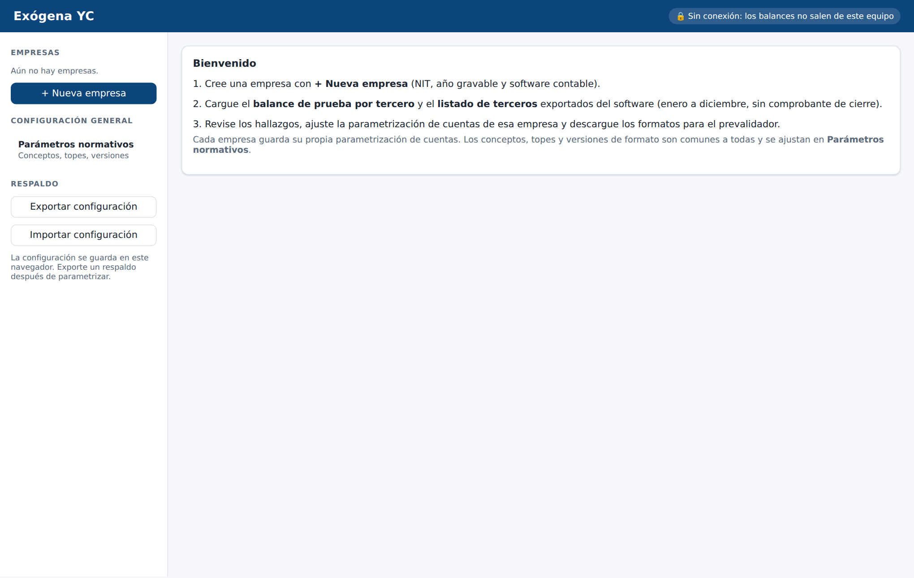
| Zona de la pantalla | Para qué sirve |
|---|---|
| Empresas | Lista de empresas creadas. Un clic abre la empresa. + Nueva empresa crea otra. |
| Parámetros normativos | Configuración común a todas las empresas: versiones de formato, conceptos, cuantías menores, UVT, países y prevalidadores. |
| Respaldo | Exportar configuración descarga un archivo con toda la parametrización; Importar configuración la restaura en otro computador o navegador. |
La primera vez y una vez al año, cuando la DIAN publique el prevalidador del año gravable
Haga clic en Parámetros normativos (panel izquierdo). Aquí vive lo que es igual para todas las empresas. Viene configurado según la Res. 000227 de 2025 y el prevalidador AG 2025; su trabajo aquí es revisar y mantenerlo al día, no llenarlo desde cero.
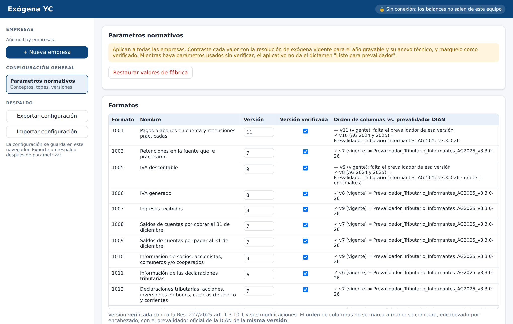
Una vez por empresa
La empresa aparece en el panel izquierdo y se abre la pestaña Datos y diagnóstico.
Una vez por empresa y año
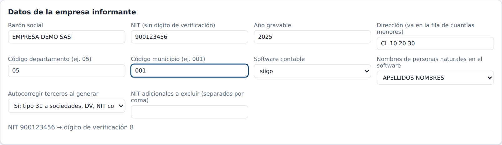
| Campo | Qué poner |
|---|---|
| Año gravable | El año que va a reportar (no el año en que se presenta). Ejemplo: la exógena que se presenta en 2026 es del año gravable 2025. |
| Dirección, código de departamento y de municipio | Los de la empresa según el RUT (DIVIPOLA: Medellín = 05 y 001). Se usan en la fila de cuantías menores y cuando la norma pide el NIT del informante. |
| Software contable | Siigo, Alegra, Dataico o genérico. Define cómo se leen los archivos. |
| Nombres de personas naturales | Cómo trae el software el nombre completo: "APELLIDOS NOMBRES" (Siigo, normalmente) o "NOMBRES APELLIDOS". Sirve para separar primer apellido, segundo apellido y nombres. |
| Autocorregir terceros | Déjelo en Sí. Corrige solo lo que tiene una única respuesta: tipo 13 → 31 en sociedades, DV errado y NIT con el DV pegado. Todo queda registrado. |
| NIT adicionales a excluir | Terceros que no se deben reportar nunca (por ejemplo, la misma empresa con otro NIT). Normalmente vacío. |
Conteste las preguntas. El aplicativo aplica el art. 1.3.1.1 de la Res. 000227 de 2025 y le dice si la empresa está obligada, no obligada, o si faltan datos, con el numeral que lo sustenta.
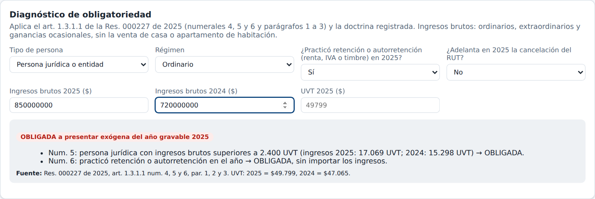
| Situación | Regla (art. 1.3.1.1) |
|---|---|
| Persona jurídica o entidad | Obligada si los ingresos brutos del año o del año anterior superan 2.400 UVT (num. 5). |
| Practicó retención o autorretención (renta, IVA o timbre) | Obligada, sin importar los ingresos (num. 6). |
| Persona natural (régimen ordinario) | Obligada si los ingresos superan 11.800 UVT y las rentas de capital y no laborales superan 2.400 UVT (num. 4). Reporta solo esas rentas (par. 3). |
| Persona natural del Régimen Simple | Obligada si los ingresos superan 11.800 UVT (num. 4 inc. 2). Si solo es agente de retención, no queda obligada (Concepto DIAN 3863 de 2025). |
Una vez por empresa · en la misma pestaña, más abajo
En la mayoría de los software, el tercero de un movimiento bancario es el cliente o el proveedor, no el banco. Pero en el 1012 el saldo de cada cuenta bancaria va a nombre del banco. Registre aquí cada cuenta auxiliar de bancos, CDT o inversiones con el NIT de la entidad (sin DV).
Pulse + Cuenta y registre una fila por cuenta auxiliar: por ejemplo, 11100501 → NIT del banco.
Si no lo hace, el aplicativo intenta deducir el banco entre los terceros de la cuenta y deja una ALERTA para que lo confirme. Si no puede deducirlo, deja un ERROR.
Cada vez que abre el aplicativo (los balances no se guardan)
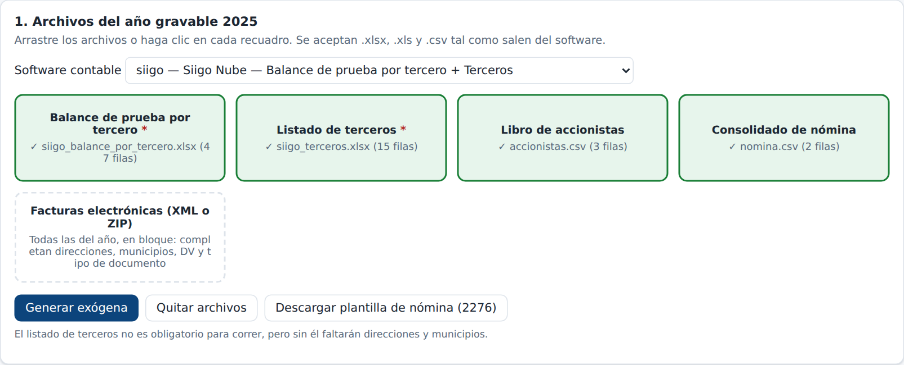
Seleccione o arrastre todos los .xml y .zip del año al recuadro Facturas electrónicas (puede seleccionar cientos a la vez). El aplicativo cruza por NIT y, para los terceros del balance:
Cada dato tomado de una factura queda como INFO "Completado con factura electrónica", con el número de la factura. Los proveedores que no facturan electrónicamente (documento soporte) no quedan cubiertos: esos hay que pedirlos.
La primera vez por empresa (es el paso más largo) · cada año, solo las cuentas nuevas
El Asistente toma las cuentas del balance de esta empresa y le pregunta, formato por formato, cómo se reporta cada una. Ya viene con una propuesta según la resolución; su trabajo es confirmarla o corregirla.
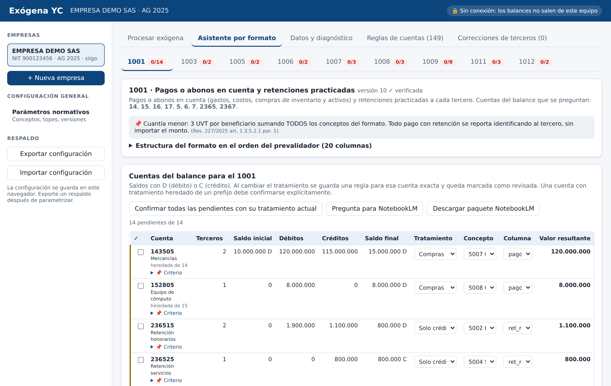
| Columna | Qué decide |
|---|---|
| Tratamiento | Qué cifra se toma: Débitos − créditos (gastos, costos), Créditos − débitos (ingresos), Compras netas (inventarios y activos: compras menos devoluciones al proveedor), Solo débitos, Solo créditos (retenciones, IVA generado), Saldo final (cuentas por cobrar y por pagar), o No se reporta. |
| Concepto | El código DIAN del formato (5002 honorarios, 5004 servicios, 5007 compras…). |
| Columna | En qué columna del formato cae (pago deducible, no deducible, retención practicada…). |
| Valor resultante | Lo que quedaría reportado. Compárelo con el balance: si no tiene sentido, el tratamiento está mal. |
| ✓ | Marca la cuenta como revisada. Al cambiar el tratamiento se marca sola. |
Cada vez que cambia algo
En Procesar exógena, pulse Generar exógena. En segundos aparece el resultado.
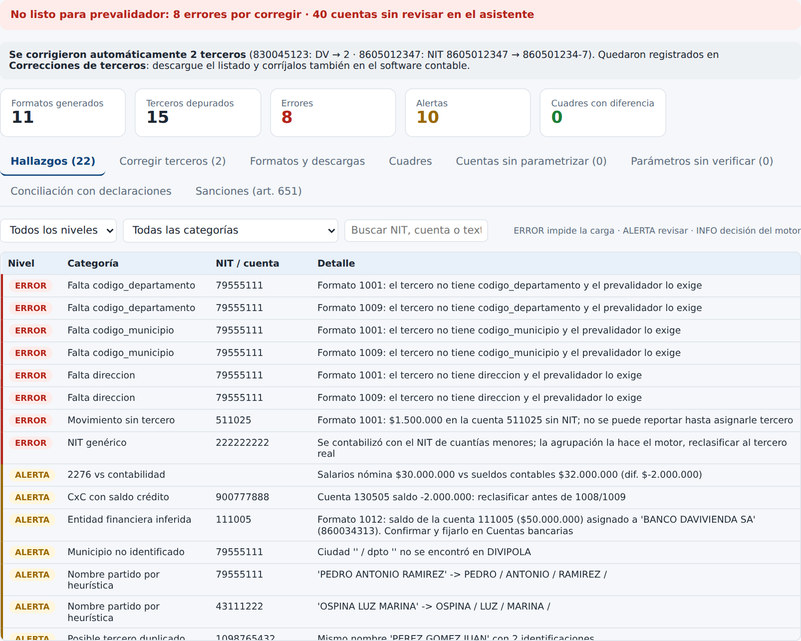
| Nivel | Qué significa | Qué hacer |
|---|---|---|
| ERROR | El prevalidador lo rechazaría o el dato sería falso ante la DIAN (movimiento sin tercero, NIT genérico usado en la contabilidad, NIT inválido, tercero de Colombia sin dirección o municipio, dirección de menos de 8 caracteres…). | Obligatorio corregir antes de presentar. |
| ALERTA | Algo que el prevalidador acepta pero que puede estar mal o incompleto (cuenta por cobrar con saldo crédito, banco deducido, nombre partido por heurística…). | Revisar y decidir. Corregir lo que se pueda. |
| INFO | Decisiones que tomó el aplicativo (tipo de documento deducido, columnas opcionales no generadas). | Leer. Normalmente no requiere acción. |
Use los filtros de la pestaña Hallazgos para ver primero los errores: elija "ERROR" en la primera lista.
Hasta que no queden errores
Muestra cada tercero con problemas y le deja corregir en la misma fila: tipo de documento, persona natural o jurídica, DV, nombres, dirección, municipio (escriba el nombre y elija de la lista) y país. Pulse Guardar en cada fila y al final Volver a generar con las correcciones.
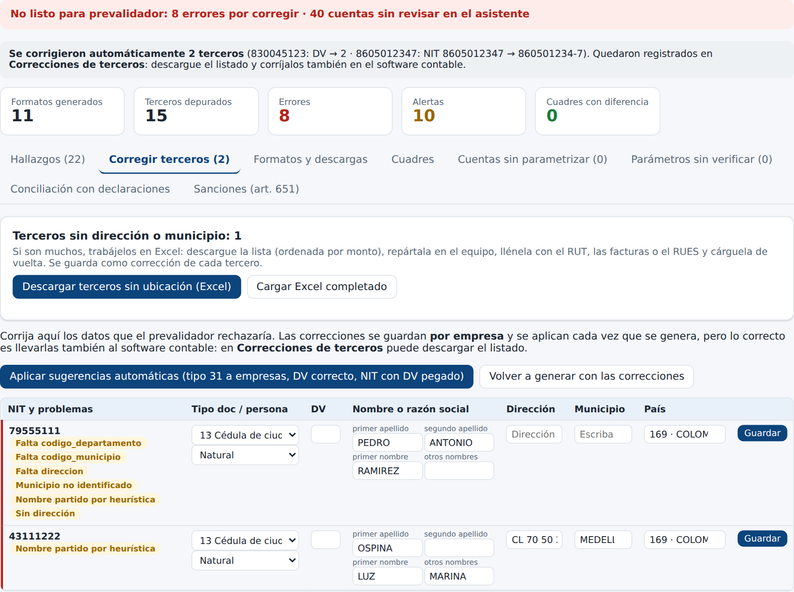
Arriba de la pestaña Corregir terceros está el contador "Terceros sin dirección o municipio". Si son muchos (y ya cargó las facturas electrónicas del Paso 6):
Las filas con problemas se rechazan con el motivo, sin aplicar nada: dirección de menos de 8 caracteres o que es el nombre de una ciudad, municipio que no existe en DIVIPOLA, o municipio homónimo sin departamento. Lo aplicado queda en Correcciones de terceros con su origen (fecha y fuente).
| Hallazgo | Solución |
|---|---|
| ERROR Movimiento sin tercero | Hay valores en una cuenta sin NIT. Asígnele el tercero en el software, vuelva a exportar el balance y cárguelo de nuevo. |
| ERROR NIT genérico (222222222) | Se contabilizó con el NIT de cuantías menores. Reclasifique al tercero real en el software: la agrupación de cuantías menores la hace el aplicativo. |
| ERROR Cuenta sin código contable | (Alegra) Hay una cuenta sin código PUC. Asígnele código en el software y vuelva a exportar. |
| ERROR Cierre incluido | Exporte el balance sin el comprobante de cierre. |
Si la pestaña Cuentas sin parametrizar muestra cuentas, son gastos, costos o ingresos con movimiento que ninguna regla reporta. Vaya al Asistente (Paso 7) y decida su tratamiento, aunque sea "No se reporta".
Antes de descargar los formatos
La pestaña Cuadres compara, por formato y columna, lo que dice la contabilidad con lo que quedó en los formatos. La columna "diferencia no explicada" debe estar en cero y el estado en OK. Una diferencia significa que un valor se perdió o se duplicó.
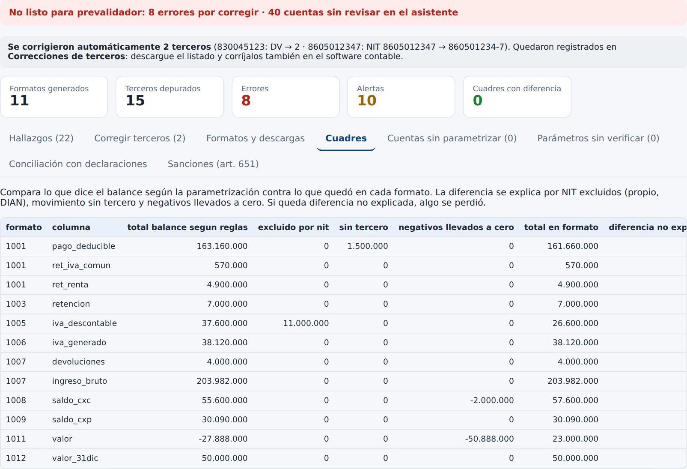
La DIAN cruza la exógena con sus declaraciones. Digite los valores declarados (IVA, retenciones 350, ingresos, cuentas por cobrar, pasivos, efectivo). La diferencia no tiene que ser cero (la renta es fiscal y la exógena contable), pero toda diferencia debe quedar explicada en la última columna.
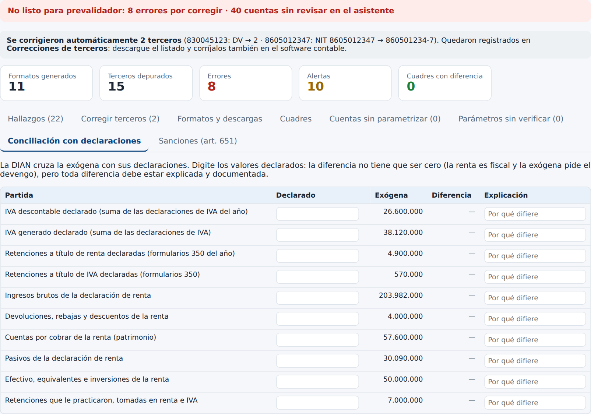
La pestaña Sanciones (art. 651) calcula la sanción posible sobre una diferencia y la reducción si se corrige antes de que la DIAN lo detecte.
Cuando el dictamen dice "✓ Listo para prevalidador"
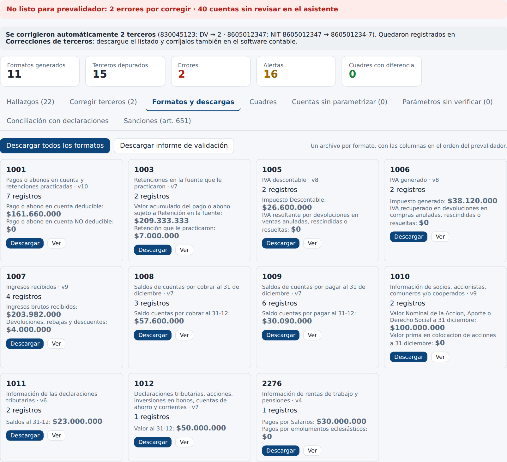
Al terminar cada sesión de trabajo
La pestaña Reglas de cuentas muestra la parametrización completa de la empresa como tabla: formato, prefijo de cuenta, concepto, columna, base y tercero fijo. Gana la regla de prefijo más largo. Puede exportarla a Excel, editarla e importarla, o copiarla desde otra empresa. El Asistente escribe aquí por usted.
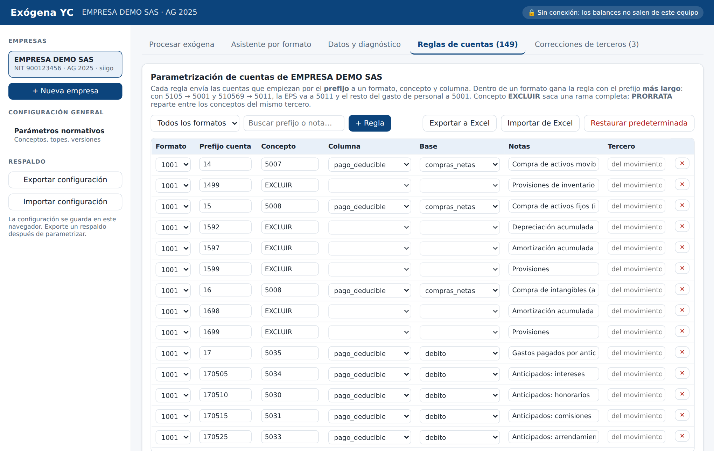
Imprima esta página y úsela con cada empresa.
Empresa: ______________________________________ NIT: ________________ Año gravable: ________
| Paso | Evidencia | |
|---|---|---|
| ☐ | Balance de prueba por tercero exportado: enero a diciembre, nivel auxiliar, sin cierre | Archivo guardado |
| ☐ | Listado de terceros exportado | Archivo guardado |
| ☐ | Libro de accionistas (si aplica) y plantilla de nómina llena (si aplica) | Archivos |
| ☐ | Prevalidador del año cargado en Parámetros normativos | ✓ en la columna de orden de columnas |
| ☐ | Datos de la empresa: año, dirección, municipio, software, régimen | Pestaña Datos |
| ☐ | Diagnóstico: obligada (numeral: ____ ) | Pantalla del diagnóstico |
| ☐ | Cuentas bancarias y de inversión con NIT de la entidad | Sin alertas de entidad financiera |
| ☐ | Asistente: todos los formatos en verde (cuentas revisadas) | Botones de formato |
| ☐ | Cero errores | Indicador "Errores = 0" |
| ☐ | Alertas revisadas y decididas | Informe de validación |
| ☐ | Cuadres sin diferencia no explicada | Pestaña Cuadres |
| ☐ | Conciliación con declaraciones: toda diferencia explicada | Pestaña Conciliación |
| ☐ | Dictamen "✓ Listo para prevalidador" | Pantalla |
| ☐ | Formatos e informe de validación descargados y archivados | Carpeta de la empresa |
| ☐ | Prevalidador DIAN sin errores y XML generados | XML |
| ☐ | Presentado en MUISCA dentro del plazo | Acuse de recibo |
| ☐ | Correcciones de terceros llevadas al software contable | Listado descargado |
| ☐ | Configuración exportada (respaldo) | Archivo .json con fecha |
Es normal: por privacidad, los balances no se guardan. Vuelva a cargarlos (Paso 6). Las empresas, reglas, correcciones y revisiones siguen guardadas.
Está en otro navegador, en otro computador, en una ventana de incógnito, o se borraron los datos del navegador. Use Importar configuración con su último respaldo (Paso 12).
Reemplace el archivo anterior con el mismo nombre y en la misma carpeta, y ábralo en el mismo navegador: la configuración se conserva y, si hay cambios normativos, el aplicativo la actualiza y lo avisa con un mensaje. Por seguridad, exporte la configuración antes de reemplazarlo.
No. Reportar datos falsos es información errónea y se sanciona (art. 651 E.T.). Cargue las facturas electrónicas del año (Paso 6), pídale el RUT al tercero o corrija el maestro del software. Para terceros de Colombia, el prevalidador exige dirección (mínimo 8 caracteres), departamento y municipio en el 1001, 1003, 1008, 1009, 1010 y 2276: sin ellos, el formato no pasa. Para terceros del exterior es al revés: esos tres campos deben ir vacíos.
Porque tenía nombre de sociedad (SAS, LTDA, S.A.…) con tipo 13 y un NIT de 9 dígitos que empieza por 8 o 9: solo puede ser NIT (tipo 31). Queda registrado en Correcciones de terceros, donde puede quitarlo si no está de acuerdo. Puede desactivar la autocorrección en Datos y diagnóstico.
Porque la DIAN cambió la versión del formato para ese año y aún no ha publicado el prevalidador correspondiente. Cuando lo publique, cárguelo en Parámetros normativos (Paso 2).
Descargue el informe de validación y abra la hoja Trazabilidad: muestra, partida por partida, qué cuenta y qué tercero fueron a qué formato, concepto y columna, con qué base, o por qué se descartaron.
En el 📌 Criterio de cada cuenta del Asistente y en el diagnóstico. Para preguntas nuevas, use el paquete de NotebookLM con la Resolución 000227 de 2025 cargada como fuente, y tome como cierto solo lo que venga con cita.